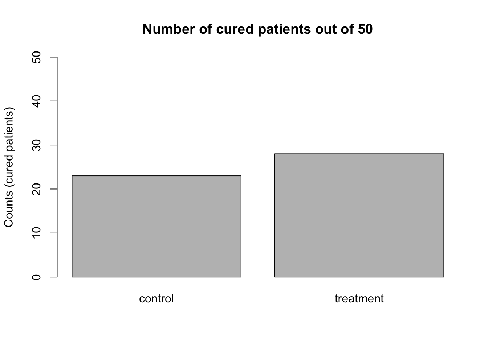
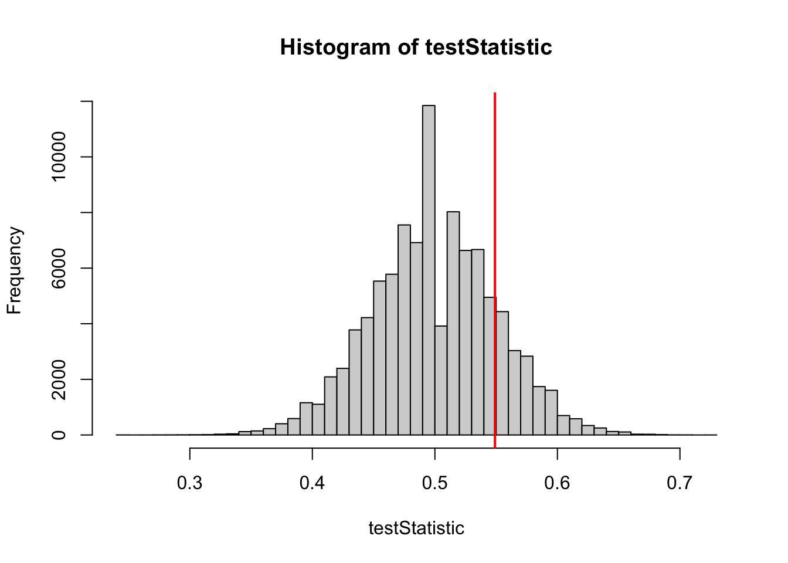
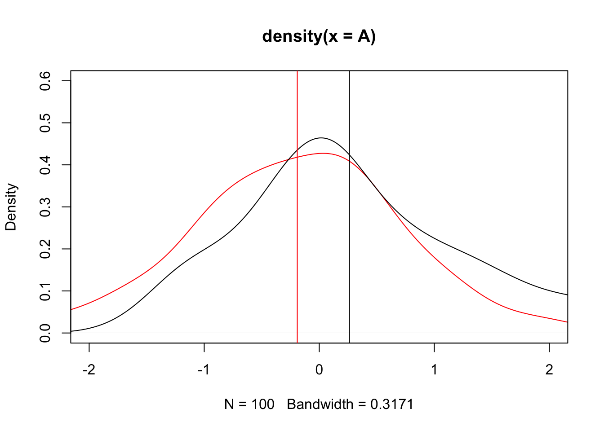
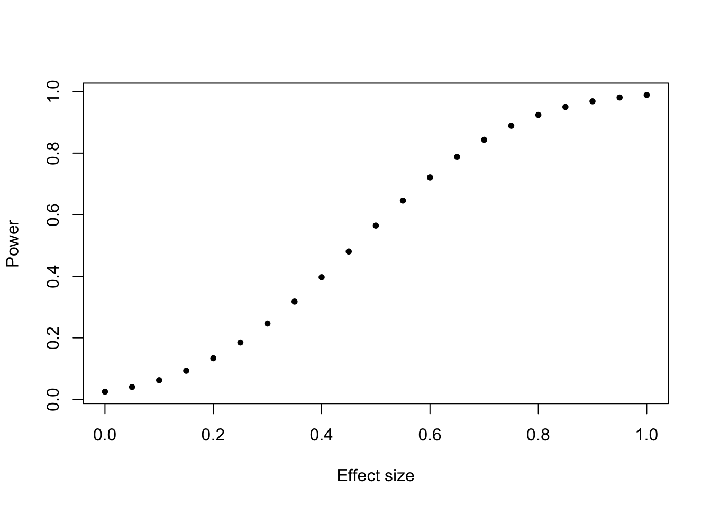
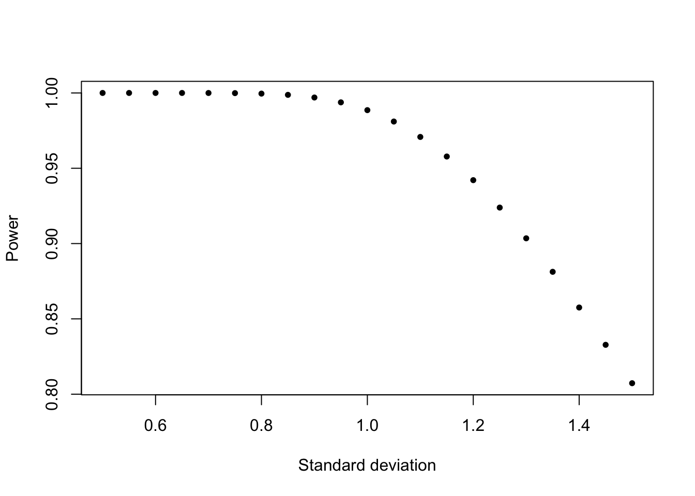

learn how to choose an appropriate test and interpret its result
practice these tests in R
practice the simulation of data and error rates
6.1 A recipe for hypothesis testing
Aim: We want to know if there is a difference between the control and the treatment.
We introduce a Null hypothesis H0 (e.g. no effect, no difference between control and treatment)
We invent a test statistic
We calculate the expected distribution of our test statistic given H0 (this is from our data-generating model)
We calculate the p-value = probability of getting observed test statistic or more extreme given that H0 is true (there is no effect): \(p-value = P(d\ge D_{obs} | H_0)\)
Interpretation of the p-value
p-values make a statement on the probability of the data or more extreme values given H0 (no effect exists), but not on the probability of H0 (no effect) and not on the size of the effect or on the probability of an effect!
If you want to read more about null hypothesis testing and the p-value, take a look at Daniel Lakens Book
Example:
Imagine we do an experiment with two groups, one treatment and one control group. Test outcomes are binary, e.g. whether individuals are cured (1) or not (0).
We need a test statistic. For example: proportion of cured patients in the treatment group from the total number of cured patients: treat/(treat+control)
We need the distribution of this test statistic under the null hypothesis (of no diference in proportion of cured patients between .
Let’s create a true world without effect:
set.seed(123)PperGroup =50# number of replicates (e.g., persons per treatment group)pC =0.5#probability of being cured in control grouppT =0.5#probability of being cured in treatment group;# pT is the same as pC, because we want to use these to get the distribution of the test statistic we define below when H0 is true (no effect)# Let's draw a sample from this world without effectcontrol =rbinom(n =1, size = PperGroup, prob = pC)treat =rbinom(n =1, size = PperGroup, prob = pT)# calculate the test statistic: treat/(treat+control)## [1] 0.5490196# and plotbarplot(c(control, treat), ylim =c(0, 50), names.arg =c("control", "treatment"),ylab ="Counts (cured patients)",main="Number of cured patients out of 50")

why do whe use set.seed() here? Read the help file of the function to understand it! help(set.seed). Experiment changing the number in the set seed in your code and compare the results for tne number of cured patients in the treatment and control groups.
The table with the results of the experiment would be:
data <-data.frame(treatment =rep(c("control", "treatment"), each =50),cured =c(rep(c(0,1), times=c(50-control, control)),rep(c(0,1), times=c(50-treat, treat))))table(data$treatment, data$cured)## ## 0 1## control 27 23## treatment 22 28
Now, let’s do this very often (100,000 times!) to get the distribution under H0 (generating a null distribution of proportion of cured patients in the treatment group):
testStatistic =rep(NA, 100000) # to store our resultsfor (i in1:100000) { control =rbinom(n =1, size = PperGroup, prob = pC) treat =rbinom(n =1, size = PperGroup, prob = pT) testStatistic[i] = treat/(treat+control) # test statistic }hist(testStatistic, breaks =50)
If you are confused with the for loop, read about it here
We now have our test statistic + the frequency distribution of our statistic if the H0 is true. Now we make an experiment: Assume that we observed the data we simulated first (our barplot): Control = 23, Treatment = 28.
hist(testStatistic, breaks =50)testStatisticData =28/(28+23)abline(v = testStatisticData, col ="red", lwd =2)

mean(testStatistic > testStatisticData)## [1] 0.16044# compare each value in our testStatistic distribution with# the observed value and calculate proportion of TRUE values # (where testStatistic > testStatisticData)
But we know actually that the test statistic follows a Chi2 distribution. So to get correct p-values we can use the prop.test for this test statistic:
prop.test(c(28, 23), c(PperGroup, PperGroup))## ## 2-sample test for equality of proportions with continuity correction## ## data: c(28, 23) out of c(PperGroup, PperGroup)## X-squared = 0.64026, df = 1, p-value = 0.4236## alternative hypothesis: two.sided## 95 percent confidence interval:## -0.1149746 0.3149746## sample estimates:## prop 1 prop 2 ## 0.56 0.46# other test statistic with known distribution# Pearson's chi-squared test statistic# no need to simulate
We pass the data to the function which first calculates the test statistic and then calculates the p-value using the Chi2 distribution.
6.2 t-test
Originally developed by Wiliam Sealy Gosset (1876-1937) who has worked in the Guinness brewery. He wanted to measure which ingredients result in a better beer. The aim was to compare two beer recipes and decide whether one of the recipes was better (e.g. to test if it results in more alcohol). He published under the pseudonym ‘Student’ because the company considered his statistical methods as a commercial secret.
t-test assumptions
Data in both groups is normally distributed
H0 : the means of both groups are equal
The idea is that we have two normal distributions (e.g. alcohol distributions):
Code
set.seed(1)A =rnorm(100, mean =-.3)B =rnorm(100, mean = .3)plot(density(A), col ="red", xlim =c(-2, 2), ylim =c(0, 0.6))lines(density(B))abline(v =mean(A), col ="red")abline(v =mean(B))

And our goals is now to test if the difference between the two means of the variables is statistically significant or not.
Procedure:
Calculate variances and means of both variables
A_m =mean(A)B_m =mean(B)A_v =var(A)B_v =var(B)
Calculate t-statistic (difference between means / (Standard deviation/sample size)
Compare observed t with t distribution under H0 (which we can do by using the CDF function of the t-distribution:
pt( t_statistic, # test statisticdf =length(A)+length(B)-2, # degrees of freedom, roughly = n_obs - n_parameterslower.tail =TRUE )*2## [1] 0.0006799933
One-sided or two-sided
If we do NOT know if the dataset from one group is larger or smaller than the other, we must use two-sided tests (that’s why we multiply the p-values with 2). Only if we are sure that the effect MUST be positive / negative, we can test for greater / less. Decide BEFORE you look at the data!
Let’s compare it to the output of the t.test function which does everything for us, we only need to pass the data to the function:
t.test(A, B, var.equal =TRUE)## ## Two Sample t-test## ## data: A and B## t = -3.4521, df = 198, p-value = 0.00068## alternative hypothesis: true difference in means is not equal to 0## 95 percent confidence interval:## -0.7122549 -0.1943542## sample estimates:## mean of x mean of y ## -0.1911126 0.2621919
Usually we also have to test for normality of our data, which we can do with another test.
Example airquality
# with real datahead(PlantGrowth)## weight group## 1 4.17 ctrl## 2 5.58 ctrl## 3 5.18 ctrl## 4 6.11 ctrl## 5 4.50 ctrl## 6 4.61 ctrlboxplot(weight ~ group, data = PlantGrowth)
ctrl = PlantGrowth$weight[PlantGrowth$group =="ctrl"]trt1 = PlantGrowth$weight[PlantGrowth$group =="trt1"]# attention: t test assumes normal dirstribution of measurements in both groups!# test normality before doing the t test:shapiro.test(ctrl)## ## Shapiro-Wilk normality test## ## data: ctrl## W = 0.95668, p-value = 0.7475shapiro.test(trt1)## ## Shapiro-Wilk normality test## ## data: trt1## W = 0.93041, p-value = 0.4519t.test(ctrl, trt1)## ## Welch Two Sample t-test## ## data: ctrl and trt1## t = 1.1913, df = 16.524, p-value = 0.2504## alternative hypothesis: true difference in means is not equal to 0## 95 percent confidence interval:## -0.2875162 1.0295162## sample estimates:## mean of x mean of y ## 5.032 4.661# note that this is a "Welch" t-test# we will have a look at the differences among t-tests in the next large exercise# What is H0? equal means# What is the result? test is not significant, H0 is not rejected# Explain the different values in the output!
Shapiro - Test for normality
If you have a small sample size, the shapiro.test will always be non-significant (i.e. not significantly different from a normal distribution)! This is because small sample size leads to low power for rejecting H0 of normal distribution
6.3 Type I error rate
Let’s start with a small simulation example:
results =replicate(1000, { A =rnorm(100, mean =0.0) B =rnorm(100, mean =0.0)t.test(A, B)$p.value})hist(results)
What’s happening here? We have no effect in our simulation but there are many p-values lower than \(\alpha = 0.05\):
mean(results <0.05)## [1] 0.043
So in 0.043 of our experiments we would reject H0 even when there is no effect at all! This is called the type I error rate. Those are false positives.
Type I error rate and multiple testing
If there is no effect, the probability of having a positive test result is equal to the significance level \(\alpha\). If you test 20 things that don’t have an effect, you will have one significant result on average when using a significance level of 0.05. If multiple tests are done, a correction for multiple testing should be used.
This problem is called multiple testing
e.g.: if you try 20 different analyses (Null hypotheses), on average one of them will be significant.
e.g.: if you test 1000 different genes for their association with cancer, and in reality, none of them is related to cancer, 50 out of the tests will still be significant.
If multiple tests are done, a correction for multiple testing should be used
increases the p-values for each test in a way that the overall alpha level is 0.05
# conduct a t-test for each of the treatment combinations# save each test as a new object (test 1 to 3)control = PlantGrowth$weight[PlantGrowth$group =="ctrl"]trt1 = PlantGrowth$weight[PlantGrowth$group =="trt1"]trt2 = PlantGrowth$weight[PlantGrowth$group =="trt2"]test1 =t.test(control, trt1)test2 =t.test(control, trt2)test3 =t.test(trt1, trt2)c(test1$p.value, test2$p.value, test3$p.value)## [1] 0.250382509 0.047899256 0.009298405# now adjust these valuesp.adjust(c(test1$p.value, test2$p.value, test3$p.value)) # standard is holm, average conservative## [1] 0.25038251 0.09579851 0.02789521p.adjust(c(test1$p.value, test2$p.value, test3$p.value), method ="bonferroni") # conservative## [1] 0.75114753 0.14369777 0.02789521p.adjust(c(test1$p.value, test2$p.value, test3$p.value), method ="BH") # least conservative## [1] 0.25038251 0.07184888 0.02789521# for details on the methods see help
If multiple testing is a problem and if we want to avoid false positives (type I errors), why don’t we use a smaller alpha level? Because if would increase the type II error rate
6.4 Type II error rate
It can also happen the other way around:
results =replicate(1000, { A =rnorm(100, mean =0.0) B =rnorm(100, mean =0.2) # effect is theret.test(A, B)$p.value})hist(results)
mean(results <0.05)## [1] 0.292
No we wouldn’t reject the H0 in 0.708% of our experiments. This is the type II error rate (false negatives).
After the experiment, the only parameter we could change would be the significance level \(\alpha\), but increasing it would result in too high Type I error rates.
6.5 Statistical power
We can reduce \(\alpha\) and we will get fewer type I errors (false positives), but type II errors (false negatives) will increase. So what can we do with this in practice?
1- \(\beta\) is the so called statistical power which is the rate at which a test is significant if the effect truly exists. Power increases with stronger effect, smaller variability, (larger \(\alpha\) ), and more data (sample size). So, collect more data? How much data do we need?
Before the experiment, you can estimate the effect size and the variability. Together with alpha (known), you can calculate the power depending on the sample size:
Code
results =sapply(seq(10, 500, by =20), function(n) { results =replicate(100, { A =rnorm(n, mean =0.0) B =rnorm(n, mean =0.2) # effect is theret.test(A, B)$p.value }) power =1-mean(results >0.05)return(power) })plot(seq(10, 500, by =20), results, xlab ="Sample size", ylab ="Power", main ="")
We call that a power analysis and there’s a function in R to do that:
power.t.test(n =10, delta =1, sd =1, type ="one.sample")## ## One-sample t test power calculation ## ## n = 10## delta = 1## sd = 1## sig.level = 0.05## power = 0.8030962## alternative = two.sided# Power increases with sample size (effect size constant, sd constant):pow <-function(n) power.t.test(n, delta =1, sd =1, type ="one.sample")$powerplot(1:20, sapply(1:20, pow), xlab ="Sample size", ylab ="Power", pch =20)
# Power increases with effect sizepow <-function(d) power.t.test(n =20, delta = d, sd =1, type ="one.sample")$powerplot(seq(0,1,0.05), sapply(seq(0,1,0.05), pow), xlab ="Effect size", ylab ="Power", pch =20)

# Power decreases with increasing standard deviation (or variance):pow <-function(s) power.t.test(n =20, delta =1, sd = s, type ="one.sample")$powerplot(seq(0.5,1.5,0.05), sapply(seq(0.5,1.5,0.05), pow), xlab ="Standard deviation", ylab ="Power", pch =20)

6.6 False discovery rate
You may have realized that if we do an experiment with a (weak) effect, we can get a significant result because of the effect but also significant results because of the Type I error rate. How to distinguish between those two? How can we decide whether a significant result is a false positive? This error rate is called the false discovery rate and to lower it we need to increase the power:
\(p(H_0)\) = probability of H0 (no effect); \(p(!H_0)\) = probability of not H0 (effect exists). Both are unknown and the only parameters we can influence are \(\alpha\) and \(\beta\). But decreasing \(\alpha\) leads to too high false negatives, so \(\beta\) is left.